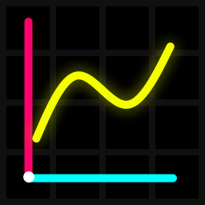

About Mathjs Grapher

Grapher designed by me (Deca Quitin).
I worked on this project alone. However, I used ChatGPT
to help me add some features, because I'm still learning programming.
You can contact me on Discord (@decaquitin, Deca Quitin#7446).
My Community Discord Server! (Quitin's Community)
Change Log
2023 July Version (2023.07.01)
A big update of Mathjs Grapher!
-Added a display in the bottom right corner of the input area
that shows the evaluated value of the expression. It can display
numbers, complex numbers, strings and matrices.
-Added a button for copying the graph to clipboard.
-Added Settings - you can now change bounds of the graph.
-Added preset saving and loading system.
-Added this page and the Help page.
-Added 48 more presets, summing up to 50 total.
-Mathjs Grapher gets its own favicon.
Release (2023.05.20)
-Improved the performance of the grapher by using web workers.
(it was quite hard when i first tried doing that trust me)
-Added presets.
-Moved Mathjs Grapher to a new page.
-Fixed some bugs with the rendering of the graph.
Release (2023.04.03)
-Added a grid to grapher.
-Removed the Graph button. Instead, I made so that when you type
an expression, the grapher automatically graphs your expression.
Release (2023.02.22)
-I made graphing at any given bounds possible via inspect element.
You could do that by using the graph(mnx,mxx,mny,mxy) function
in the console of the inspect element.
Release (2023.02.17)
Mathjs Grapher is born. It consisted of input box,
the graph button and canvas for graph.